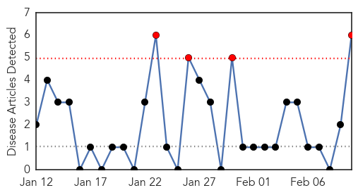
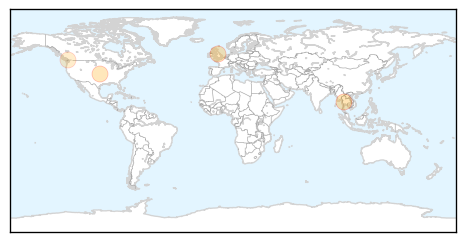
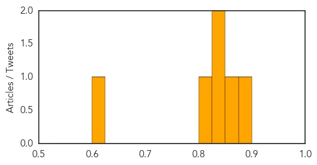

Hepatitis
30-Day Web Trend
4 alerts, 0 warnings

30-Day Twitter Trend
0 alerts, 0 warnings

Article Locations
Article Confidences
Top Articles:
- 0.888
- Passaic school district employee diagnosed with Hepatitis A, officials say
- 0.866
- Hepatitis Spreads in Northern Arakan
- 0.842
- Employee at Passaic High School diagnosed with Hepatitis A
- 0.832
- GI Society releases video to spread awareness about hepatitis C
- 0.803
- Do adults need booster shots?
- 0.605
- Gastrointestinal Society Releases New Video about Hepatitis C -- VANCOUVER, Feb. 10, 2015
Top Tweets:
-
No tweets found for Feb 10, 2015
Mold/Fungal
30-Day Web Trend
0 alerts, 0 warnings

30-Day Twitter Trend
0 alerts, 0 warnings

Article Locations

Article Confidences

Top Articles:
-
No articles found for Feb 10, 2015
Top Tweets:
-
No tweets found for Feb 10, 2015